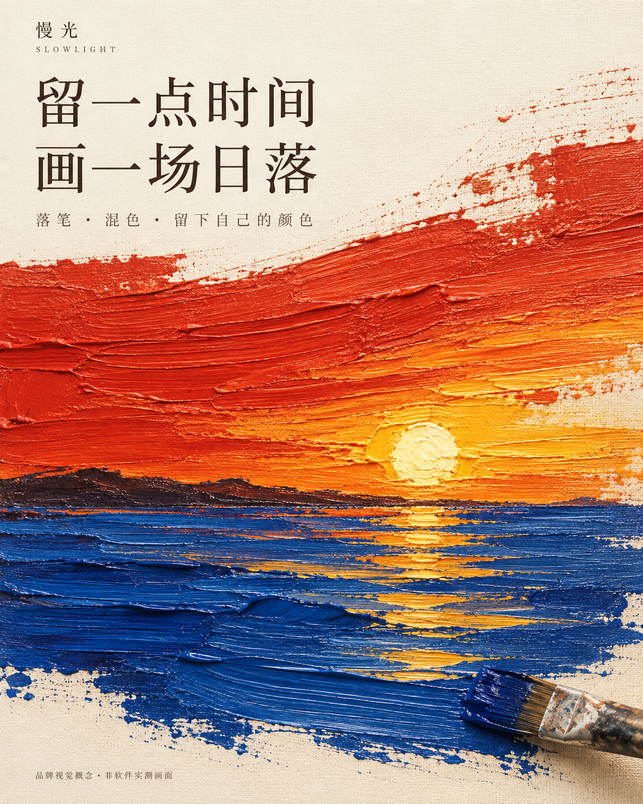
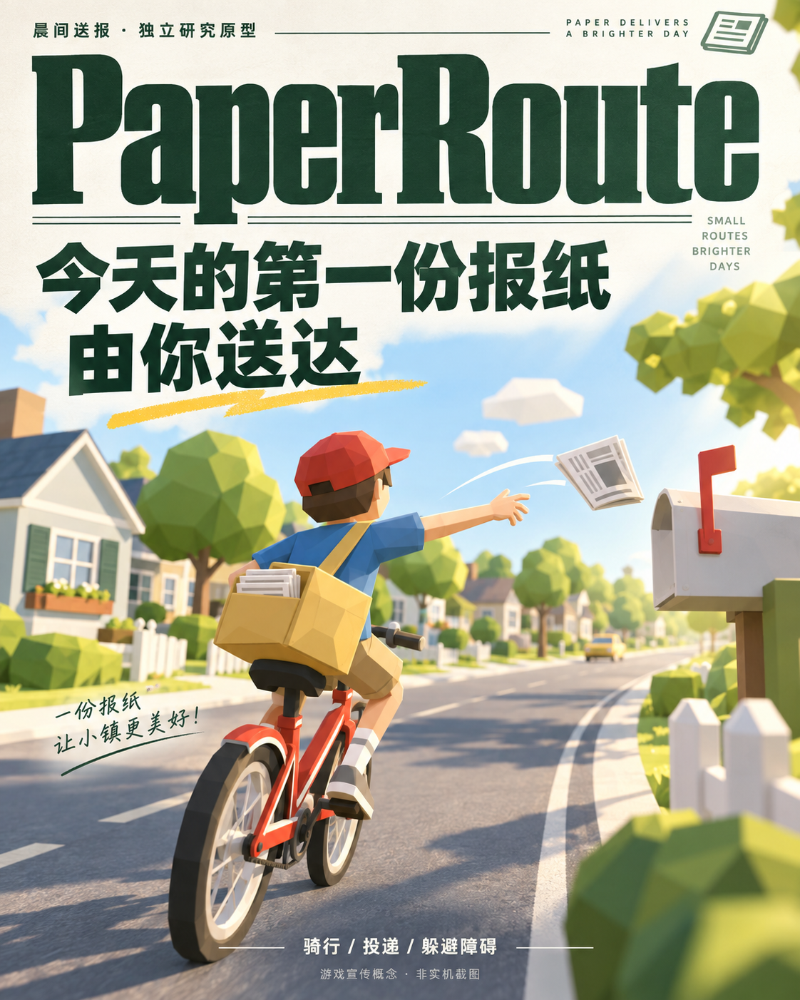
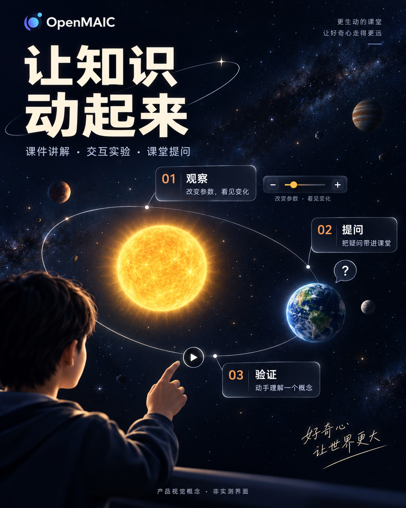

商品由素材保证
只等比缩放和摆放，避免生成模型改动包装。低清素材不会因导出大图而变清晰。
按产品特色重新设计 / 第二版
三张独立设计的宣传概念图。点击图片查看完整原图；这些画面由 AI 创作，不是产品实测截图。

放大落笔、混色与日落的感受，用画布肌理和宋体传递安静的创作体验。
下载原图 · 设计提示词
报纸刊头建立识别，斜向街道和抛出的报纸表现玩法，黄绿与红色保持轻快。
下载原图 · 设计提示词
用轨道实验串起观察、提问与验证，深蓝背景突出知识对象和操作线索。
下载原图 · 设计提示词下面保留上一版截图合成工具，用于修改文案和验证尺寸；它不会生成上方的新版海报。
LIVE PREVIEW / 实时排版
以下为本演示固定规格，不代表任何平台的最新上传要求。导出前请确认原商品背景、文字和清晰度。
这一步验证什么
只等比缩放和摆放，避免生成模型改动包装。低清素材不会因导出大图而变清晰。
标题与说明按画布换行，超出区域时阻止导出。字体使用本机中文字体，跨设备字形可能不同。
这版可用三个历史产品案例制作模拟推广图。品牌标识上传、项目保存、审批和 AI 背景仍待实现；节省工时与付费需求尚未验证。